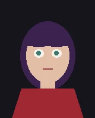

Kit demo
Living portrait
Move the cursor near her. Hover to poke. Without script, or with reduced motion, you get the still.

Kit demo
Move the cursor near her. Hover to poke. Without script, or with reduced motion, you get the still.
